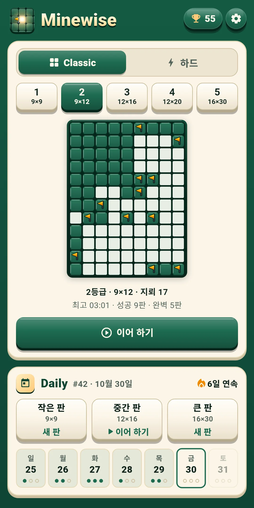
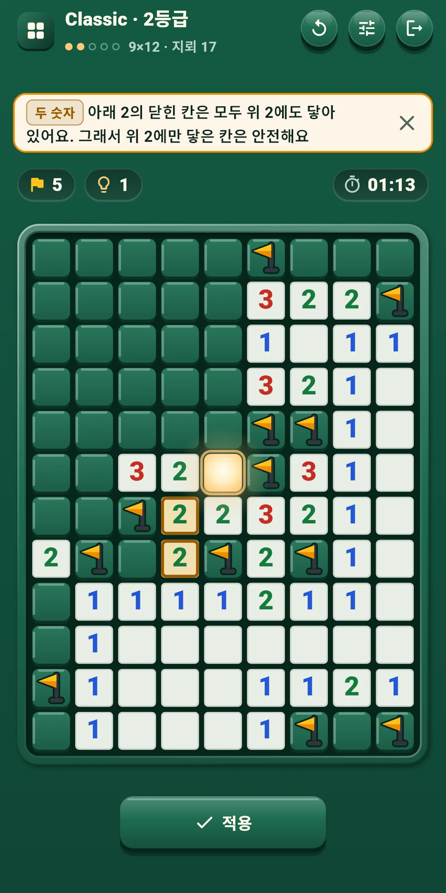
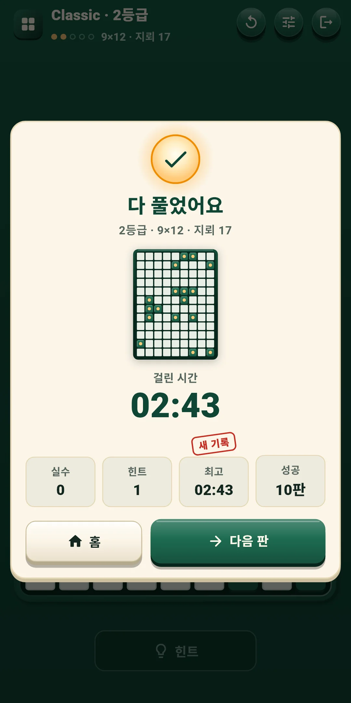
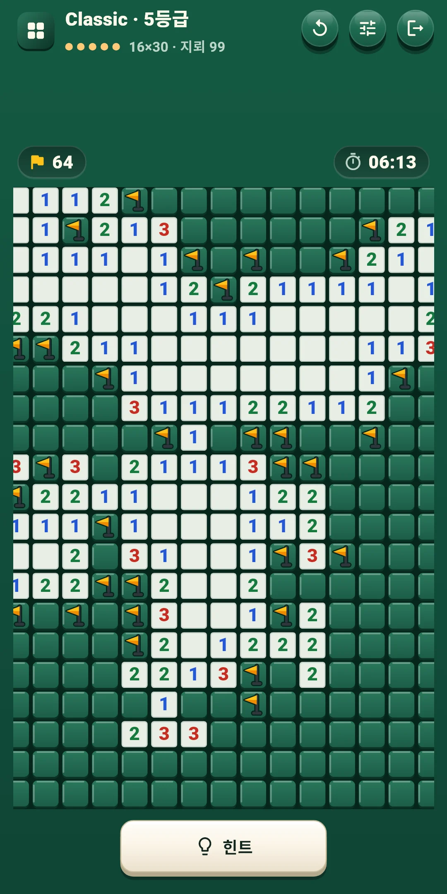
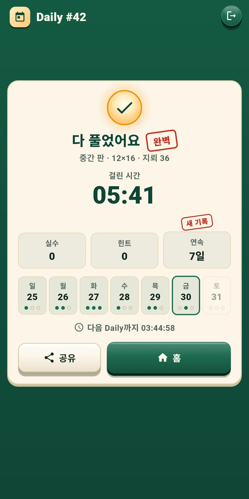
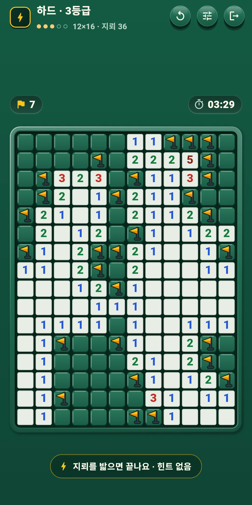
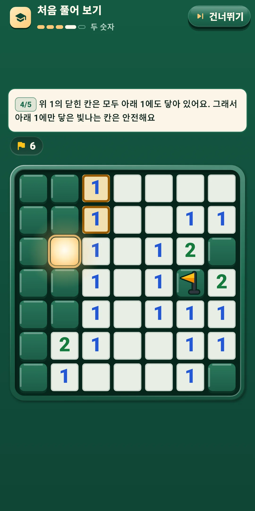

Minewise
사용 설명서
사용 설명서







| 앱 이름 | Minewise |
|---|---|
| 버전 | 1.0.1 |
| 개발 | Willee Project |
| 지원 플랫폼 | Android |
숫자 단서만으로 지뢰를 피해 지뢰가 아닌 칸을 모두 여는, 추측 없는 지뢰찾기 퍼즐입니다. 모든 판은 빛나는 시작 칸에서 시작해 찍지 않고 논리만으로 끝까지 풀립니다.
첫 실행 안내가 7×7 판 하나로 기본을 알려 줍니다. 시작 칸 → 숫자와 깃발 → 한꺼번에 열기 → 두 숫자 → 혼자 풀기의 다섯 단계이고, 단계마다 볼 숫자와 지뢰를 밝혀 주며 눌러야 할 칸만 눌립니다. 힌트는 쓴 요령을 이름표로 달아 알려 줍니다. 한 숫자, 두 숫자, 여러 숫자, 남은 지뢰 수, 모든 배치의 다섯 가지이고, 뜻은 다음과 같습니다.
1등급 판은 한 숫자와 두 숫자만으로 풀립니다. 2등급부터는 여러 숫자와 남은 지뢰 수까지 필요한 판이 나올 수 있습니다. 더 어려운 요령은 힌트가 이유와 함께 알려 줍니다(4장).
위쪽 줄 왼쪽에는 모드 이름과 등급(예: Classic · 3등급)이, 그 아래에는 등급 점과 판 크기·지뢰 수(예: 12×16 · 지뢰 36)가 보입니다. Daily는 Daily 번호(#12)와 판 종류가 보입니다. 오른쪽 단추는 다음과 같습니다.
| 단추 | 하는 일 |
|---|---|
| 다시 하기(↻) | 이 판 처음부터와 새 판을 고르는 창을 엽니다(아래) |
| 빠른 설정 | 효과음·진동·효과·조작·판 설정(5장)을 게임 화면에서 바로 바꾸는 창을 엽니다. 창 위쪽을 누르거나 끌어 내리면 닫힙니다 |
| 나가기(문 모양) | 홈으로 나갑니다. 푸는 판은 저절로 저장됩니다 |
판 바로 위 줄:
판 아래 줄:
| 단추 | 하는 일 |
|---|---|
| 힌트 | 다음에 열 칸을 이유와 함께 알려 줍니다. 횟수 제한이 없습니다(4장). 시작 칸을 열기 전과 판이 끝난 뒤에는 누를 수 없습니다 |
| [열기|깃발] | 조작 B일 때만 보입니다. 누르는 칸을 열지 깃발을 꽂을지 정합니다 |
다시 하기 창:
| 고를 것 | 내용 |
|---|---|
| 이 판 처음부터 | 판을 시작 칸을 열기 전 모습으로 되돌립니다. Classic은 시간·실수·힌트도 처음부터 세고, Daily는 그날 쓴 시간·실수·힌트를 이어서 셉니다. 시작 칸을 열기 전에는 흐리게 꺼져 있습니다. 하드 판에는 없습니다 |
| 새 판(Classic·하드) | 이 판은 그만두고 같은 등급의 다른 판을 풉니다. 그만둔 판은 성공으로 세지 않습니다(하드는 6장). Daily에는 없습니다 |
힌트 단추가 다음에 열 칸 하나를 이유와 함께 알려 줍니다. 힌트는 횟수 제한 없이 무료입니다(하드 판은 빼고). 시작 칸을 연 뒤부터 쓸 수 있습니다.
같은 자리의 단추를 세 번 누릅니다. 힌트 → 칸 보기 → 적용입니다.
설정의 조작과 판 묶음에서 켜고 끕니다. 게임 중에는 빠른 설정에서 바로 바꿀 수 있습니다.
| 등급 | 판 크기 | 지뢰 수 |
|---|---|---|
| 1 | 9×9 | 10 |
| 2 | 9×12 | 17 |
| 3 | 12×16 | 36 |
| 4 | 12×20 | 50 |
| 5 | 16×30 | 99 |
Minewise Daily 작은 판 #12 ✅ 03:41 실수 0 · 힌트 1 🔥 5일 연속
#12는 Daily 번호이고, 그 옆은 걸린 시간(분:초, 한 시간이 넘으면 시:분:초)입니다. 첫 줄의 'Minewise Daily'는 어느 언어에서나 같고, 같은 판을 푼 사람끼리 견주도록 판 종류를 함께 적습니다. 둘째 줄은 실수 수와 힌트 수, 셋째 줄은 연속 기록입니다(이틀 이상일 때만). 번호는 첫 Daily가 열린 날이 #1이고 하루에 하나씩 늘어나, 번호가 같으면 같은 판입니다.
홈 오른쪽 위의 트로피 단추로 엽니다. 단추에는 성공한 판 수가 보입니다.
홈 오른쪽 위 톱니바퀴로 엽니다. 묶음은 넷입니다. 게임 중에는 빠른 설정 단추로 앞의 세 묶음을 바로 바꿀 수 있습니다.
| 항목 | 내용 |
|---|---|
| 효과음 | 칸을 열고 깃발을 꽂고 뺄 때, 숫자를 눌러 한꺼번에 열 때, 지뢰를 밟을 때, 힌트·판 완성·결과 도장 같은 소리를 켜고 끕니다 |
| 진동 | 깃발을 꽂을 때는 짧게, 뺄 때는 더 가볍게, 지뢰를 밟을 때는 무겁게, 판을 다 풀면 길게 울립니다. 켜고 끕니다 |
| 효과 줄이기 | 모든 효과를 한 번에 줄입니다. 켜 두는 동안 아래 움직임·빛·색종이는 꺼진 것과 같습니다 |
| 움직임 · 빛 · 색종이 | 효과마다 켜고 끕니다. 움직임은 열기 물결·깃발 튐·해체, 빛은 시작 칸의 숨·터짐·완성의 빛, 색종이는 결과 화면입니다. 판 전체가 흔들리는 효과는 없습니다 |
| 항목 | 내용 |
|---|---|
| 조작 | 누르기·길게 누르기(처음 값)와 [열기|깃발] 단추 가운데 고릅니다(3장) |
| 길게 누르는 시간(ms) | 250·300·350·400·500 가운데 고릅니다. 처음 값은 350입니다. 누르기·길게 누르기일 때만 씁니다 |
| 숫자 눌러 한꺼번에 열기 | 둘레의 깃발 수가 숫자와 같으면 나머지 칸을 엽니다. 처음에는 켜져 있습니다 |
| 항목 | 내용 |
|---|---|
| 시간 보기 | 판 위에 시간을 보입니다. 처음에는 켜져 있습니다 |
| 실수 바로 보기 | 틀린 깃발에 바로 X를 그립니다(하드 판은 빼고). 처음에는 꺼져 있습니다 |
| 큰 숫자 | 판의 숫자를 크게 그립니다. 처음에는 꺼져 있습니다 |
| 항목 | 내용 |
|---|---|
| 언어 | 기기 언어를 따르거나(처음 값) 목록에서 직접 고릅니다 |
| 개인정보 보호 옵션 | 광고 동의를 다시 엽니다. 동의가 필요한 지역(유럽 등)에서만 보입니다 |
| 규칙 보기 | 목표·숫자·빛나는 시작 칸·조작·실수·힌트·Daily·하드의 짧은 규칙을 봅니다 |
| 첫 실행 안내 다시 보기 | 첫 실행 안내(처음 풀어 보기)를 다시 합니다 |
| 앱 정보 | 버전, 이 설명서(게임 방법), 개인정보처리방침, 오픈소스 라이선스 |